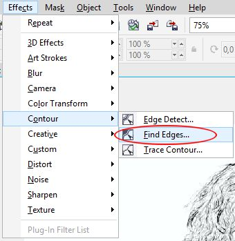
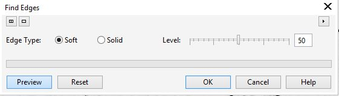
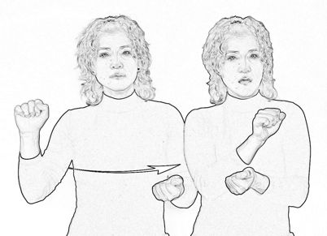
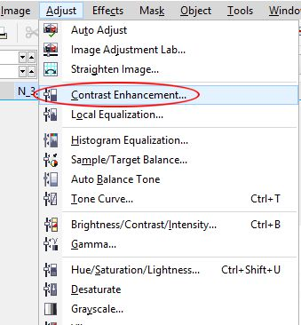
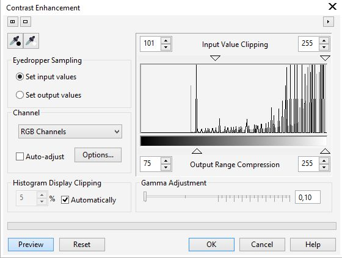
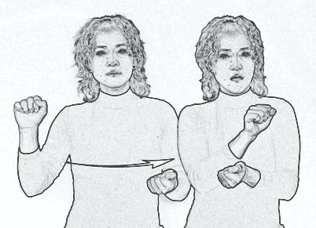

Помогите создать рисунок из фотографии
Наташа / 28.09.2014, 02:10
Форум:
Мне нужно переобразовать рисунок как на картинке (рис.1) из фотографии. Очень нужно, помогите пожалуйста.
Мне нужно переобразовать рисунок как на картинке (рис.1) из фотографии. Очень нужно, помогите пожалуйста.
... если из этой фото, то:
Отредактировать фото, сделать резче и контрастнее, по возможности.
Затем бросить в CorelDRAW(можно и в нем редактировать - Effects-Adjust- там на выбор...) и в контекстном меню по клику правой клавишей мыши по фото выбрать - Centerline Trace -> Technical illustration... затем задать толщину линий или применить к ним Artistic media. Ну как то так.
Можно попробовать другие варианты трассировки.
как-то так
...или так
Нет, я имела ввиду из фотографии сделать рисунок как на вверху. Это для книги - обучение жестового языка. Нужен видеоурок, фотографий очень много (((
Из фото автоматом так не получится, хотя можно поискать в интернете.... есть другие программы и фильтры
А так только, что то типа того и доработать руками...
Наташа, тут не совсем понятно, что Вам там нужно в конечном итоге получить. Что я имею ввиду... В предложенном Вами примере, по всей видимости именно рисунок и сделанный скорее всего не из фото. К тому же там только контуры и всё. Вам нужно было дополнительно сказать, какие "отступления" от этого варианта допустимы. Т. е. нужны только контуры человека или допускается в картинке что-то еще, ну и может еще какие-то дополнительные нюансы. А вообще, такое можно сделать в Photo-Paint, который идет в комплекте с CorelDraw.
Я на всякий случай напишу, как сделать, а Вы решайте сами, подойдет это Вам или нет. К тому же надо учитывать, что такой способ может дать не одинаковые результаты на разных фото. Я показываю на примере вашего изображения.
1. Открываете фото в Photo-Paint.
2. Effects > Contour > Find Edges (рис. 1)

В окне фильтра оставляем значения по умолчанию, либо подстраиваем по своему вкусу (рис. 2).

Получим результат (рис. 3).

3. Далее действуете по обстоятельствам. Я дополнительно использовал команду: Adjust > Contrast Enhancement (рис. 4).

В окне фильтра делаем настройки, как на рис. 5.

Получаем конечный результат (рис. 6).

Можно по усмотрению поменять настройки, чтобы получить нужный результат. Но, на скорую руку у меня вышло так.